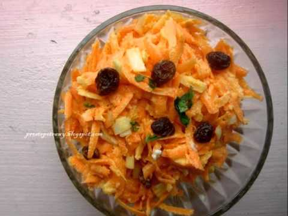
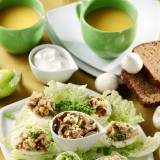

Szybkie I Proste Przepisy Na Obiad - Pomsly

Pomsly
Home Resep Masakan Szybkie I Proste Przepisy Na Obiad
Szybkie I Proste Przepisy Na Obiad
Szybkie I Proste Przepisy Na Obiad . Nieraz zdarza się, że nie mamy dużo czasu na Aby zobaczyć cały przepis na wybrane danie należy kliknąć w napis „PRZEPIS TUTAJ" lub w zdjęcie potrawy. Proste do wykonania przepisy, króre sprawdzą się w trakcie tygodnia pracy, od Curry, frittaty, makarony, proste zupy, od smażonych filetów kurczaka po proste i pyszne pomysły na rybę.
Jak zrobić zapiekankę serowo-ziemniaczaną? Podajemy prosty ... (Frederick Morales) Mam dopracowany już niemal do perfekcji system cotygodniowych zakupów spożywczych robionych online, dopasowanych do konkretnych przepisów. Zobacz przepisy na dobre i szybkie obiady. Ciekawe porady nie tylko naszych użytkowników.
Wyniki wyszukiwania dla "szybki niedzielny obiad przepisy". pokaż przepisy tylko ze zdjęciami.
Ciekawe porady nie tylko naszych użytkowników.
DownloadRyba duszona w sosie warzywnym - prosty przepis na zdrowy ...
DownloadSzybkie muffinki bez cukru z (nie)czekoladą | szczypta ...
DownloadPrzepis: Naleśnikowe ślimaczki - Proste i Smaczne Przepisy
DownloadSzybka dynia z kaszą, soczewicą i amarantusem JulioBlog.pl
DownloadSzybkie i zdrowe danie danie z woka na każdą porę dnia ...
DownloadOstra zapiekanka przepis Zobacz na przepisy.pl
DownloadPrzepisy na tanie i szybkie obiady - Strona główna | Facebook
DownloadSmaczna Pyza - Sprawdzone przepisy kulinarne: Zapiekanka ...
DownloadCiasta w 2020 | Pomysły na dania, Ciasta i Jedzenie
Smaczne, wilgotne i ładnie pachnie cynamonem. Pyszna propozycja na obiad, taka nietypowa propozycja z rodzynkami. Zdarza się, że czasem po prostu nie ma kiedy stać przy kuchence i przyrządzać wieloetapowego dania.
Related : Szybkie I Proste Przepisy Na Obiad. Tags: Resep Masakan Lebih baruLebih lama
Woles Footer Menu Widget
About Contact Sitemap Privacy Disclaimer 2019 © Polkie Island - All right reserved. Diberdayakan oleh Blogger